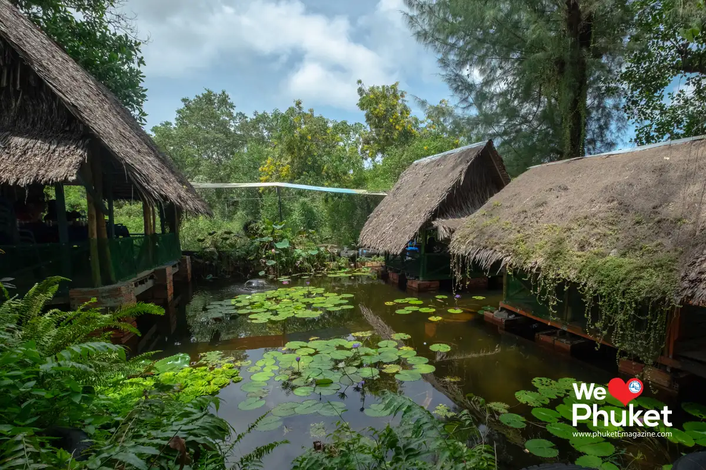
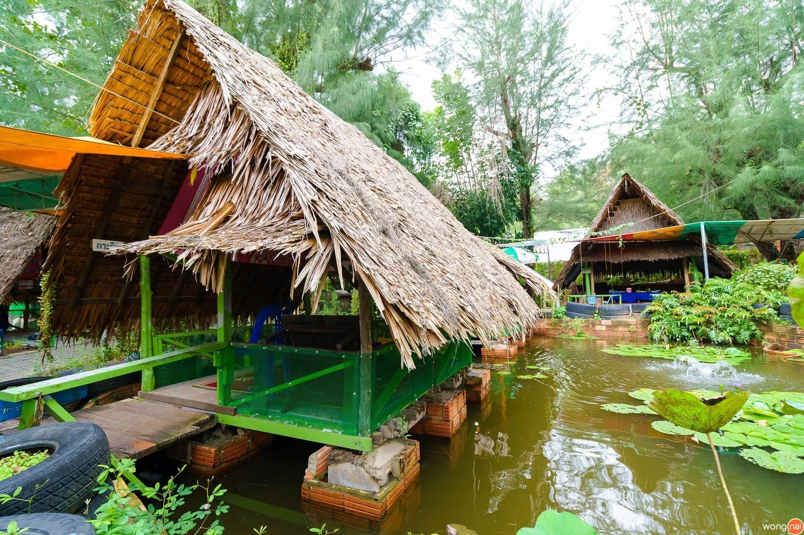
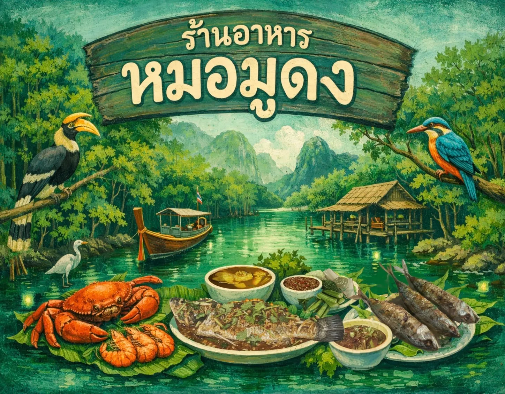
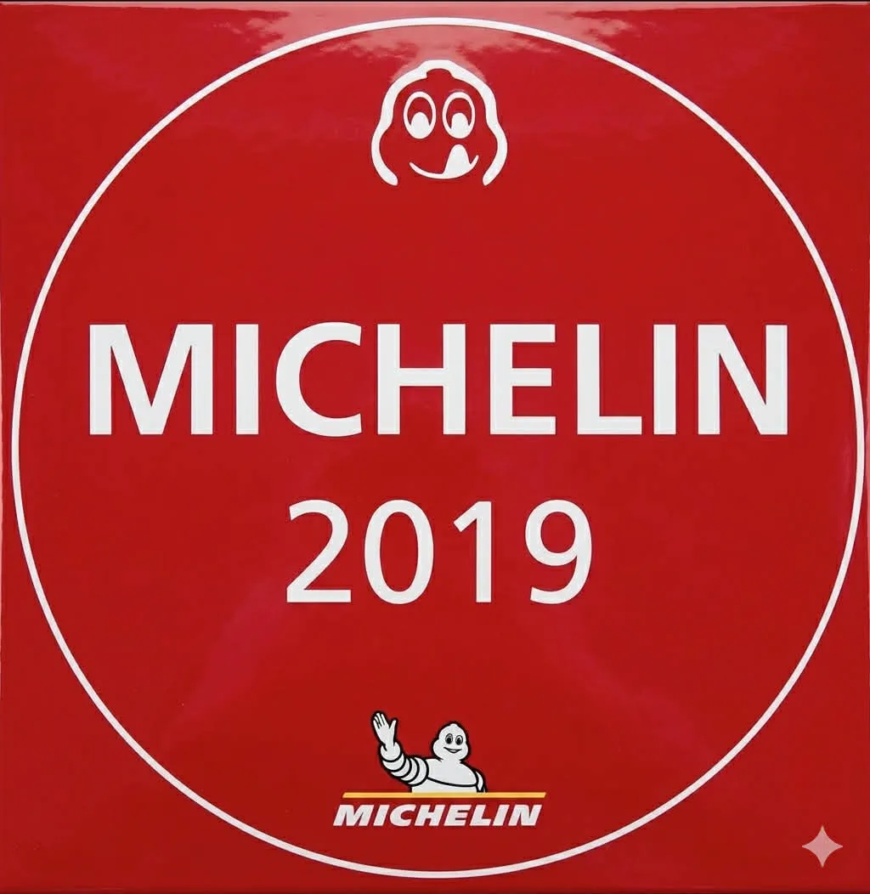
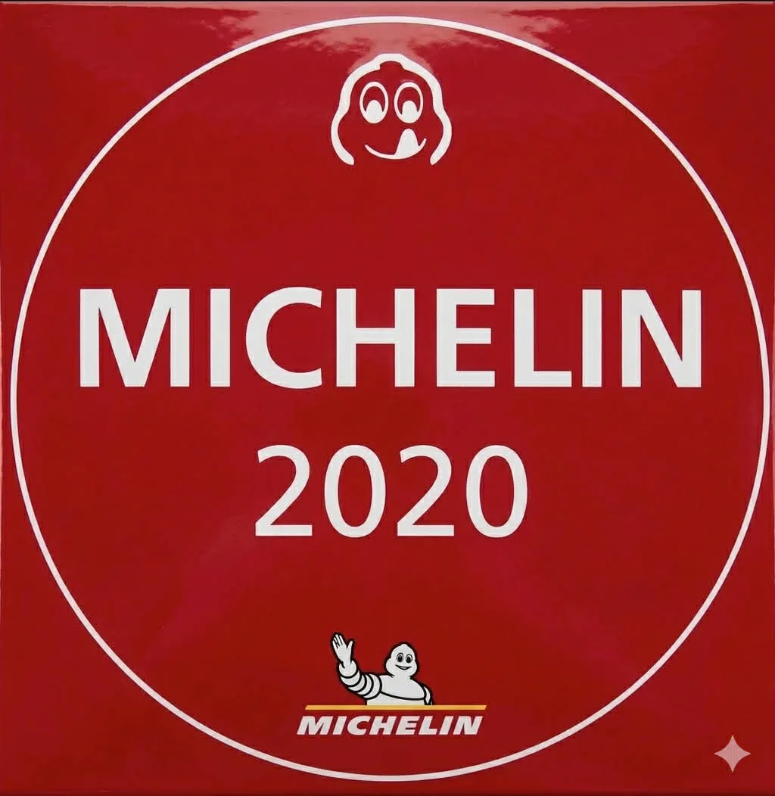
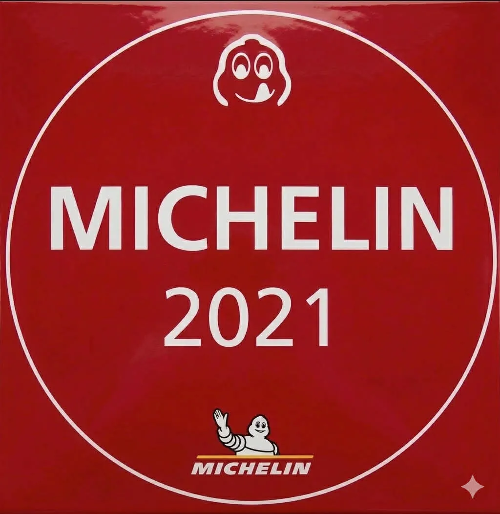
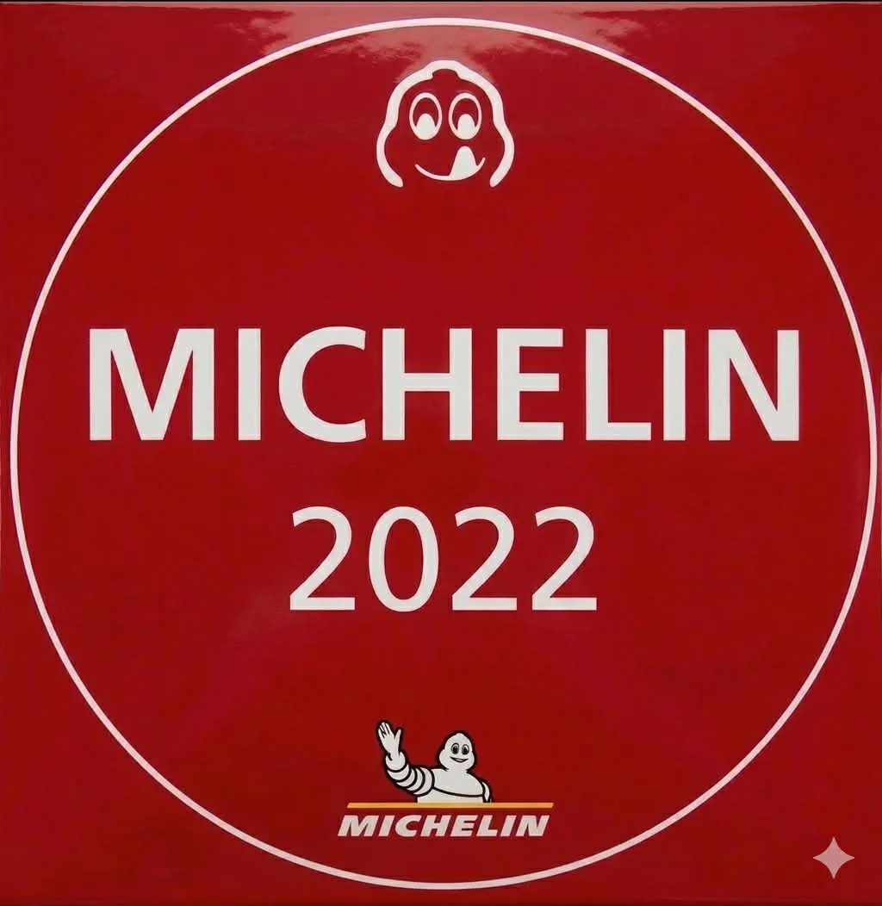
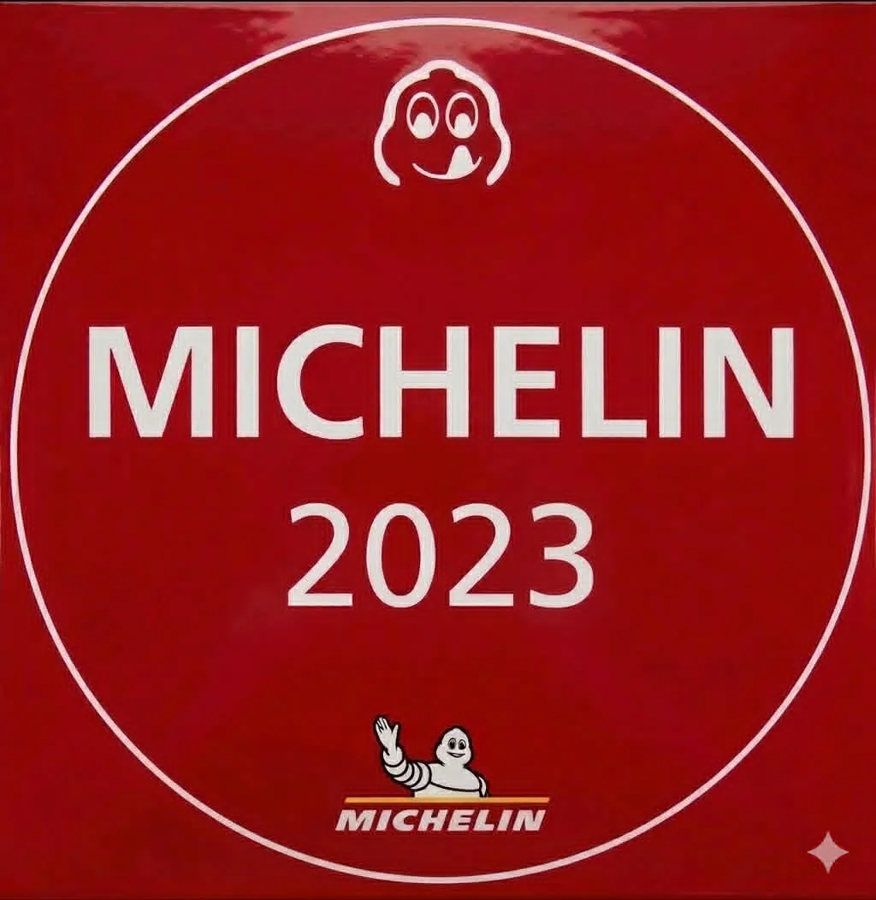
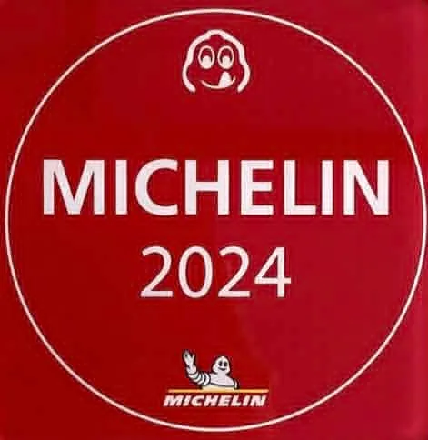
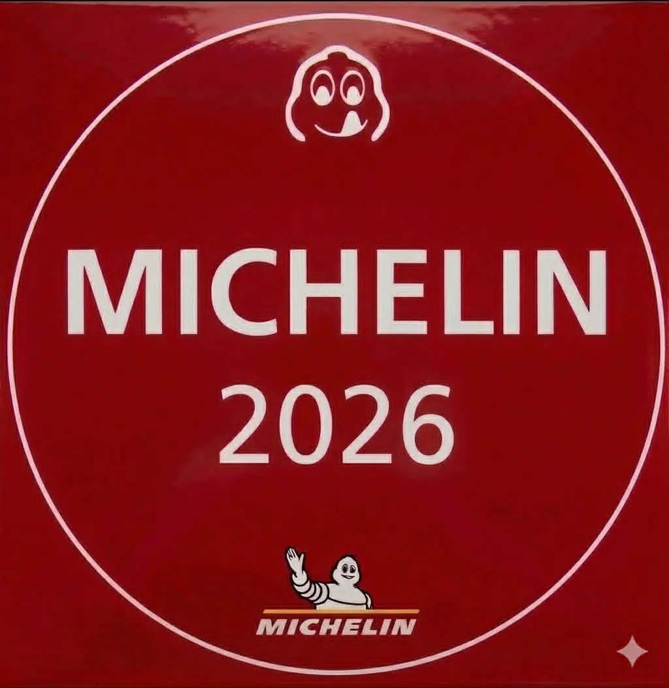

ร้านหมอมูดงเป็นร้านอาหารพื้นบ้านชื่อดังของภูเก็ต ถ่ายทอดรสชาติอาหารใต้แท้ ๆ จากรุ่นสู่รุ่น โดยใช้วัตถุดิบสดใหม่จากธรรมชาติ

ตอนนี้ทางร้านอาหารหมอมูดงของเราทำจุดเช็คอินใหม่เพื่อให้ลูกค้าทุกคนได้ถ่ายรูปคู่กับป้ายของร้าน
คัดสรรจากท้องถิ่น
รสชาติดั้งเดิม
สงบ ผ่อนคลาย






